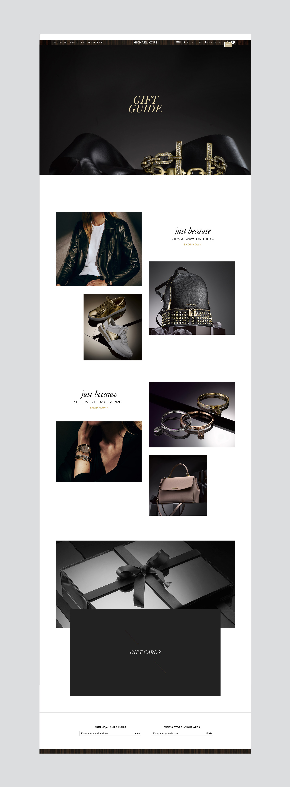

Gift Guide
Michael Kors is a well known global luxury lifestyle brand led by a renowned, award-winning designer. MK features distinctive designs, materials and craftsmanship with a jet-set aesthetic that combines stylish elegance and a sporty attitude. This mini-site has been created for the holiday season showcasing the perfect gift ideas for her.
— Role: Concept / Art Direction / Web Design
- 
-

-